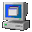

WindowBlocker
Download:
 Download hier of klik op de computer of op de titel
Beschrijving:
Een klein handig programmaatje om die rotte reclamevensters tegen te houden bij Internet Explorer. Versie 3.x vereist, versie 5.x voor browser integratie.
Laatste Versie:
1.0.3
Grootte:
Zipped: 61 KB
UnZipped: 120 KB
Externe bestanden:
Geen
ScreenShot